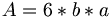

De: La Frikipedia, la enciclopedia extremadamente seria.
De: La Frikipedia, la enciclopedia extremadamente seria. De: La Frikipedia, la enciclopedia extremadamente seria.
Beryl posee muchas acepciones, "cubo flipante"(la gente de linux), "mariconada inservible y copiada"(según Jobs), "nuestro brainstorming para el futuro"(según Gates) o por último, pero no menos importante "wow"(la gente que cree que es Vista).
En resumen beryl es un escritorio 3D que se puede instalar en la linux y freebsd y que en un principio iba a ser una manera de optimizar el trabajo de la gente, pero en lugar de ello provoca millones de euros en perdidas, debido a que estos se pasa horas y horas girando el cubo, estirando la ventana y chuleandose al vecino que tiene el Ventanucos en su PeCe.
Existen diversas formas de distinguir el cubo del sistema gráfico del Hasefroch Vista, la primera es que la habitación en la que te encuentras tendrá una temperatura normal, en comparación al calor producido por un ordenador con dicha versión de SO ventanero. La segunda será que podrás divisar más de dos efectos, ya que el Hasefroch Vista sólo posee el slideshow y la preview. Y la tercera y más importante es que no verás un BSOD donde deberíade estar el escritorio.
Todo esto, claro esta, cuando no te des cuenta de que a diferencia de el Hasefroch Vista, no esta hecho con el paint, sino con un ultimo sitema 8D garantizado por una panda de locos que generalmente son seguidores del gran pinguino "Tux".
Dado que beryl basicamente es un cubo(realmente es un prisma) se puede definir como una constante donde  donde a es la longitud de la base y a la altura de la pantalla, hallando de esta forma su area. Para hallar su volumen suele usarse la siguiente formula , dado que el volumen de Beryl es igual al XML se puede concluir que , y por último combinando el area con la fórmula anterior obtenemos que
Debido a que tengo mejores cosas que hacer os redirecciono a la página del proyecto Beryl o "usa el puto Google" que para algo está.
Este magnifico sistema esta disponible en todos los sistemas del mundo, menos los de Apple, los Unix que no son Linux, y los Hasefroch (Que ultimas noticias dicen que en su nuevo Hasherforh 7 sacaran un sistema similar, basado en que el escritorio es una ventana, y los escritorios estaran por los marcos de la misma.
Autor(es):